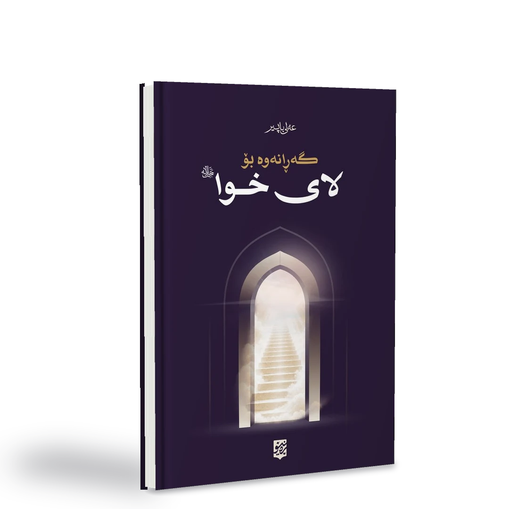
گەڕانەوە بۆ لای خوا
کتێبێکی گشتگیرە لەبارەی تۆبە و گەڕانەوە بۆ لای خوا، لە حەوت بەشدا: پێناسە و حوکمی تۆبە، چۆنیەتیی تۆبەکردن و تۆبەی ڕاست و ساغ، مەرجەکان و هۆکارەکانی سەرگرتنی، و ئەو گوناحە گەورە و بچووکانەی کە تۆبەیان لێ دەکرێت.
ماوسەکەت بەسەر ڕەفەکەدا بجووڵێنە بۆ هەڵبژاردنی کتێبێک؛ ناونیشان و پوختەکەی لە خوارەوە دەردەکەوێت.

کتێبێکی گشتگیرە لەبارەی تۆبە و گەڕانەوە بۆ لای خوا، لە حەوت بەشدا: پێناسە و حوکمی تۆبە، چۆنیەتیی تۆبەکردن و تۆبەی ڕاست و ساغ، مەرجەکان و هۆکارەکانی سەرگرتنی، و ئەو گوناحە گەورە و بچووکانەی کە تۆبەیان لێ دەکرێت.
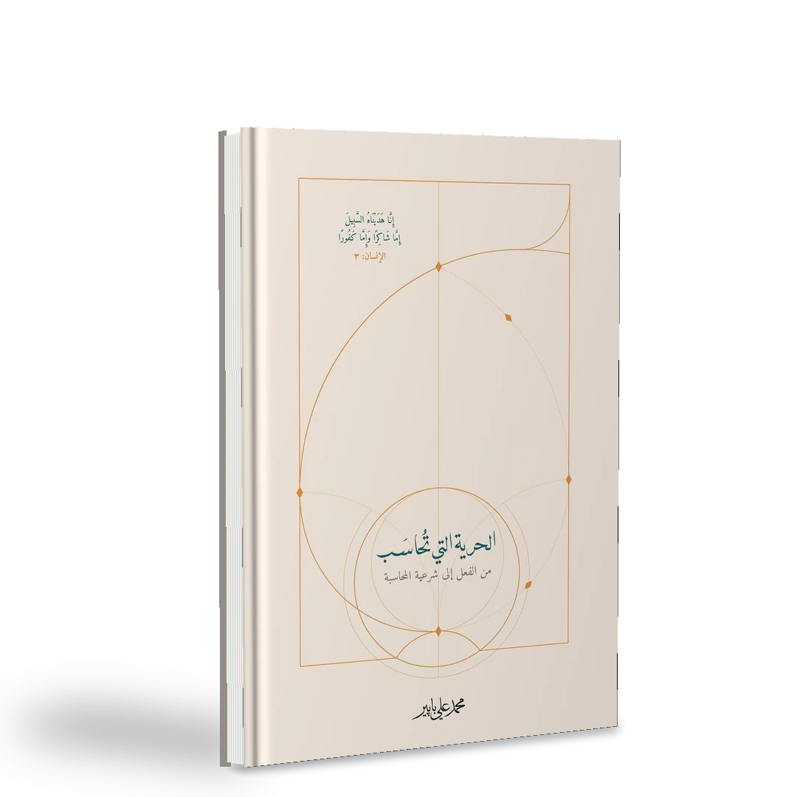
کتێبێکە لەبارەی ئیرادەی ئازاد و بەرپرسیارێتیی ئاکاری؛ بەدوای ئەوەدا دەچێت کە پرسیاری ئیرادەی ئازاد چۆن بە درێژایی مێژوو گۆڕاوە، و ئەو پرسیارە جیاوازانە لێک جیا دەکاتەوە کە لە پشت وشەی «ئازادی»یەوە شاراونەتەوە، تا دەربخات حوکمی لێپرسینەوە لەسەر چ بناغەیەک دادەمەزرێت.
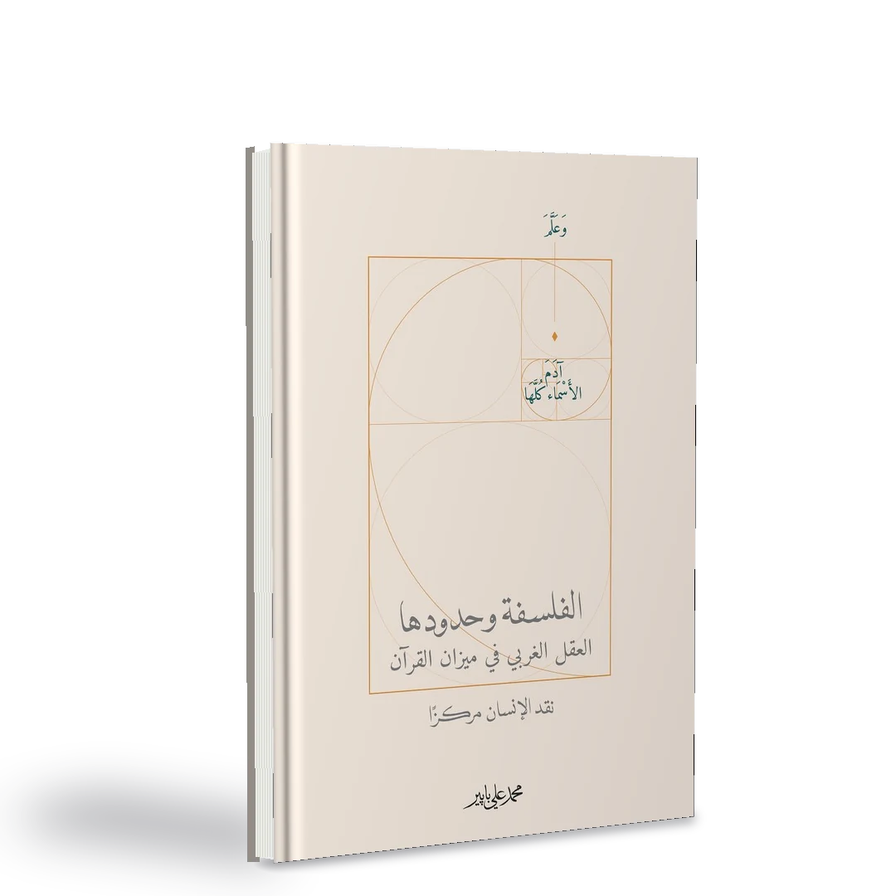
توێژینەوەیەکی فەلسەفیی بەراوردکارییە لە سنوورەکانی دامەزراندندا: ئەو پڕۆژە فەلسەفییانە تاقی دەکاتەوە کە عەقڵ، ئەزموون، هۆشیاری، زمان یان مێژوویان کردووەتە سەرچاوەی کۆتایی مانا و پێوەر، و بە چوارچێوەیەکی قوڕئانییان بەراورد دەکات کە لە ڕاستییەکی پێش مرۆڤەوە دەست پێ دەکات.
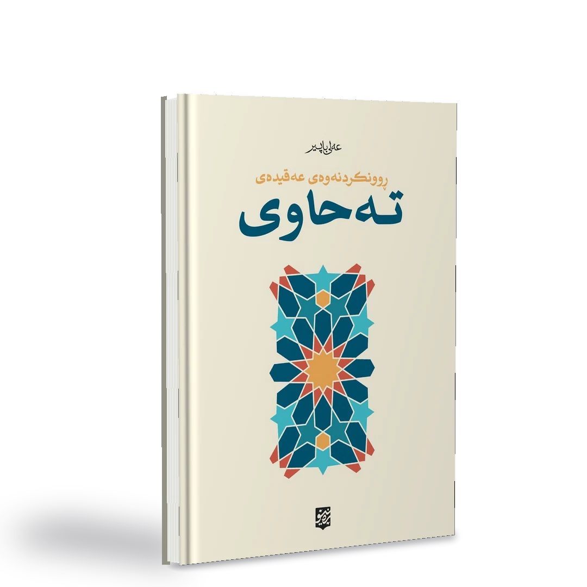
ڕوونکردنەوەی مەتنی بەناوبانگی «عەقیدەی تەحاوی»یە، کە لە بنەڕەتدا ساڵی ١٩٩٣ لە بیست و دوو (٢٢) دەرسدا گوتراوەتەوە؛ نووسەر تێیدا جەخت لەوە دەکاتەوە کە ئیمان و عەقیدە بناغەی دینداری و مسوڵمانێتییە.
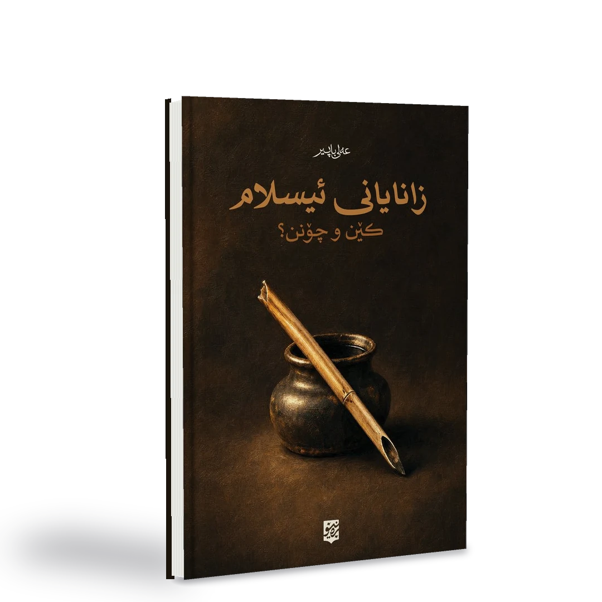
لە بنەڕەتدا وتارێکی هەینییە کە ساڵی ١٩٩٩ لە مزگەوتی جیهاد لە سلێمانی دراوە و دواتر فراوان کراوە: پێناسەی زانایانی ئیسلام، پلە و پایەیان لە قوڕئان و سوننەتدا، سیفەت و ئاکارەکانیان، مافیان بەسەر ئوممەتەوە و ئەرکیان بەرانبەر بە ئیسلام و مسوڵمانان، لەگەڵ چەند ئامۆژگارییەک بۆ گەنج و قوتابیان.
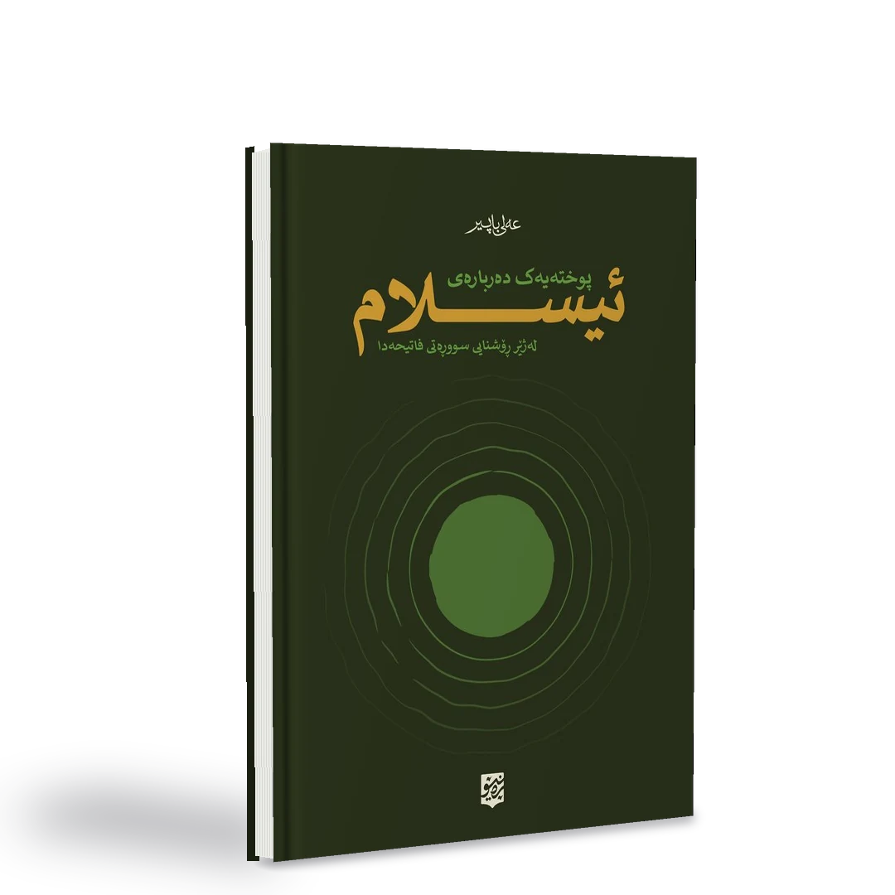
پوختەیەکی کورت و ڕوونە دەربارەی ئیسلام؛ ڕوونی دەکاتەوە کە مرۆڤ وەک هەموو بوونەوەرێکی دیکە پێویستی بە ڕێنمایی پەروەردگارەکەیەتی، و ئیسلام ئەو ڕێنمایی و بەرنامەیەیە کە خوا بۆ ژیانی مرۆڤی داناوە.
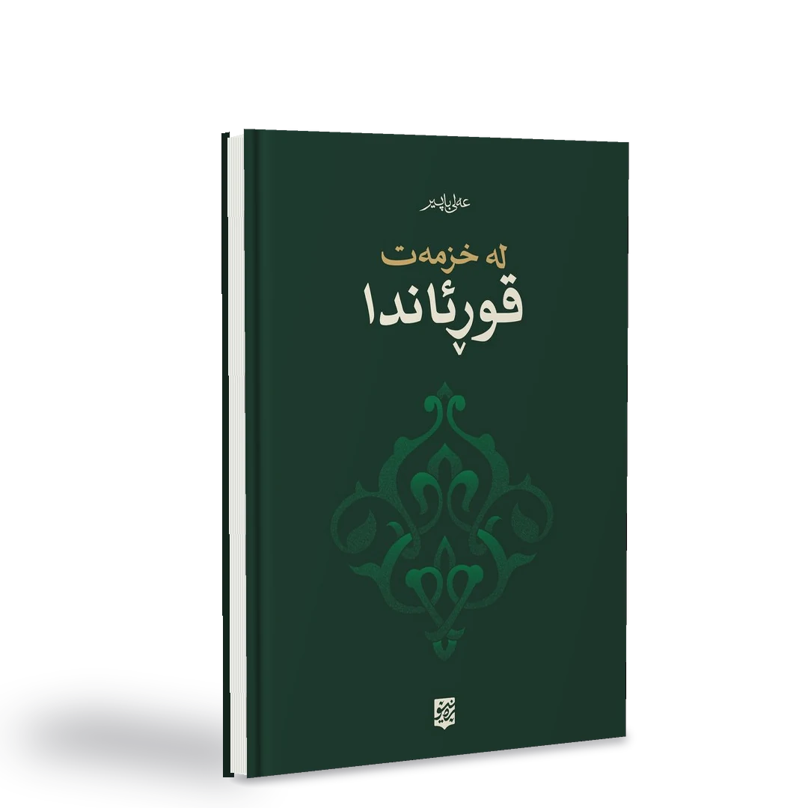
پێناسەیەکی قوڕئانە، دوایین فەرمایشتی خوا بۆ مرۆڤ و جن، و لە پێنج خاڵی سەرەکیدا ئەو ئەرکانە ڕوون دەکاتەوە کە لە بەرانبەر قوڕئاندا لەسەر شانی ئێمەیە.
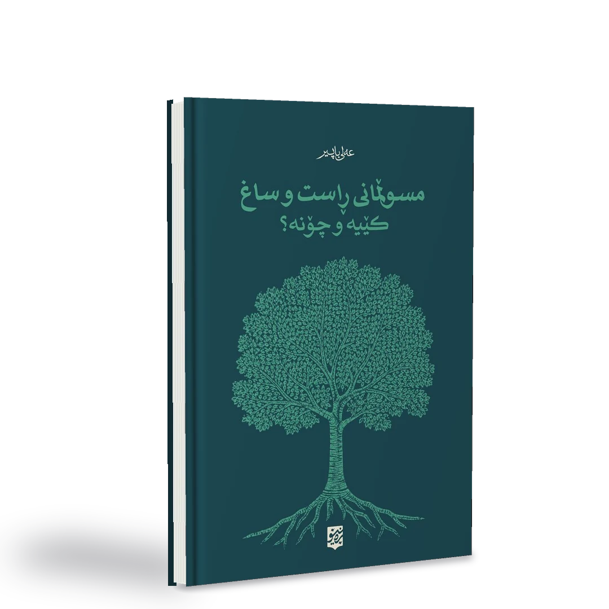
نووسەر لەم کتێبەدا سەرنج دەداتە واقیعی دینداریی مسوڵمانانی ئەمڕۆ و ئەو کەموکووڕییانەی ڕووی تێکردووە، و لەبەر ڕۆشنایی قوڕئان و سوننەتدا سیما و نیشانەکانی مسوڵمانی ڕاست و ساغ دەخاتە ڕوو.
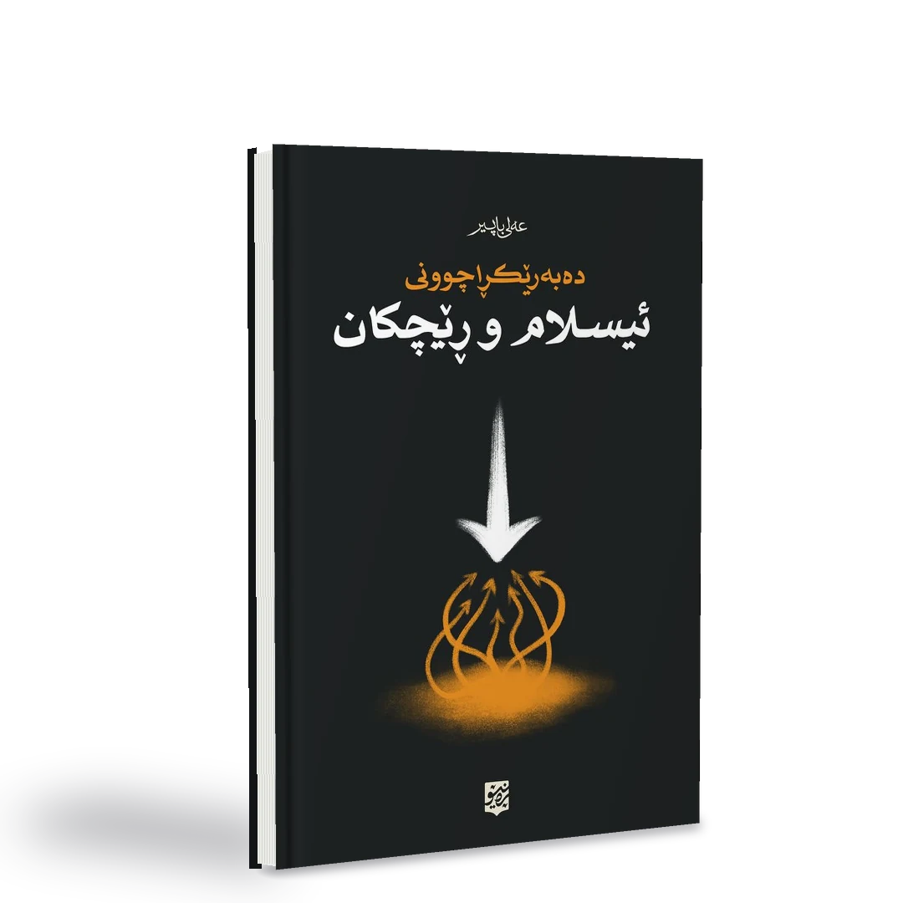
زنجیرەیەک وتووێژە کە زۆربەیان لە ڕووداوی ڕاستەقینەوە وەرگیراون، تێیدا ئیسلام ڕووبەڕووی ئەو بیردۆزە و ڕێچکە دەستکردانە دەبێتەوە کە لە کۆمەڵگەدا بڵاو بوونەتەوە، و بە پەراوێز و پاشکۆ و فەرهەنگۆکێک تەواو کراوە.
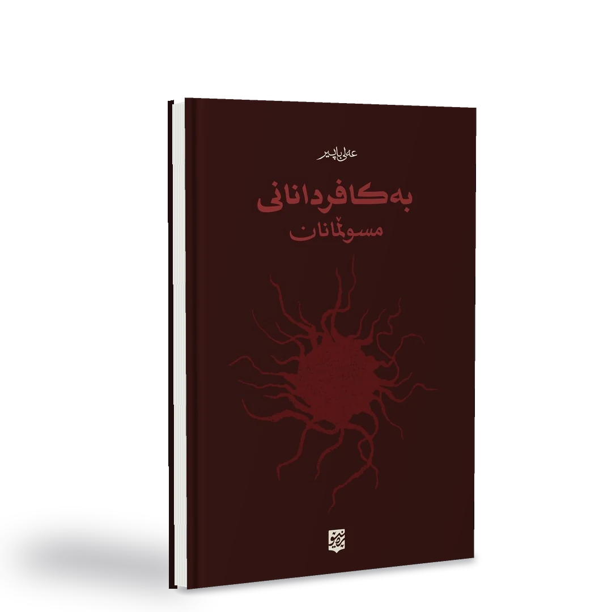
ئەم کتێبە کۆی سێ وتارە کە ساڵی ٢٠٢٥ بۆ کۆمەڵێک مامۆستای مزگەوت گوتراونەتەوە. لە هەشت تەوەردا باسی بەکافردانان (تەکفیر) دەکات، لە پێناسەکەیەوە دەست پێ دەکات و جەخت لەوە دەکاتەوە کە بناغە لە مسوڵماناندا ئیمان و ئیسلامە.
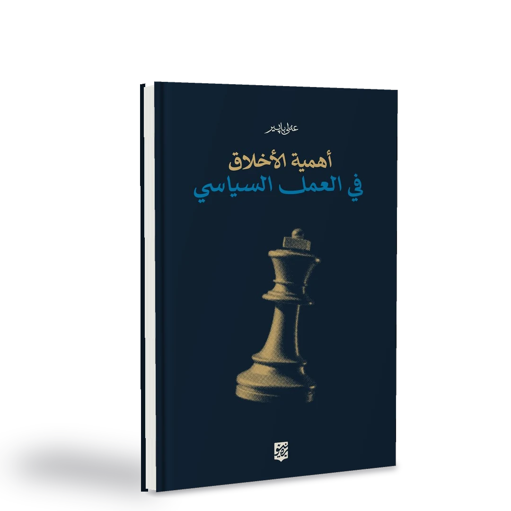
ئەم کتێبە باس لە قەیرانی ئاکار و ڕەوشت دەکات لە بواری سیاسەت و حوکمڕانیدا، و ڕوونی دەکاتەوە کە پابەندبوون بە ئاکاری بەرز و بەها باڵاکان لە کاری سیاسیدا تەنها بە ئیمان و عەقیدەی ساغ و خواپەرستیی پاک و ڕەوشتی جوان دەستەبەر دەبێت، کە سەرچاوەکەیان وەحییە: قوڕئان و سوننەتی پێغەمبەر ﷺ.
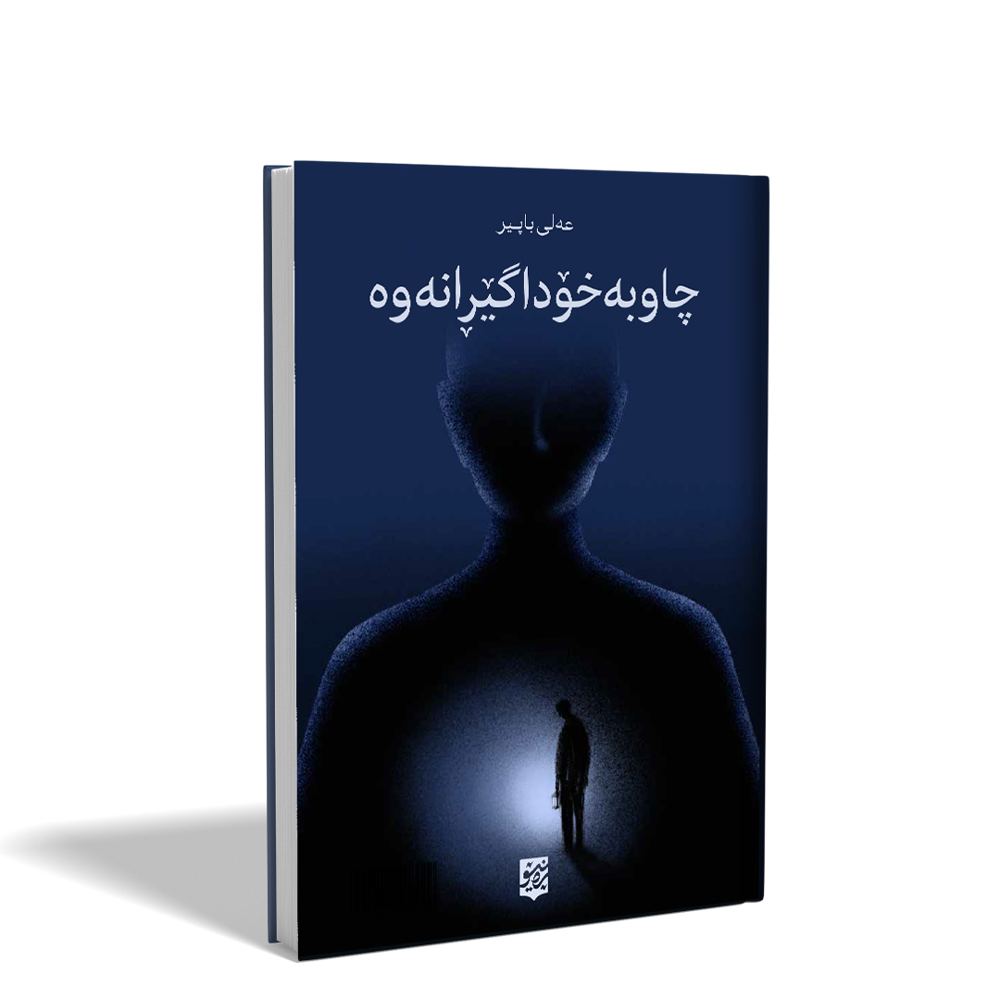
ئەم کتێبە وەک لە ناونیشانەکەشیەوە دیارە چاو بەخۆداگێڕانەوەیەکی گشتگیر و هەمەلایەنەیە بۆ کۆی بوار و لایەنەکانی دینداریی مسوڵمانانمان. هەوڵم داوە لە سەرجەم بوارەکانی تێڕوانین و بوونناسی و ئیمان و عەقیدە و خواپەرستی و تەزکییە و تەقوا و ڕەوشت و ئاکار و کاروباری کەسێتی و کۆمەڵایەتی و سیاسیدا، نوختە بخەمە سەر پیت و بە شێوەیەکی بەڵگەیی هاوسەنگانەی دوور لە کورتھێنان و تێپەڕاندن، نەخشەڕێ و هێڵە گشتییەکانی موسڵمانێتییەکی ڕاست و ساغ بخەمە ڕوو.
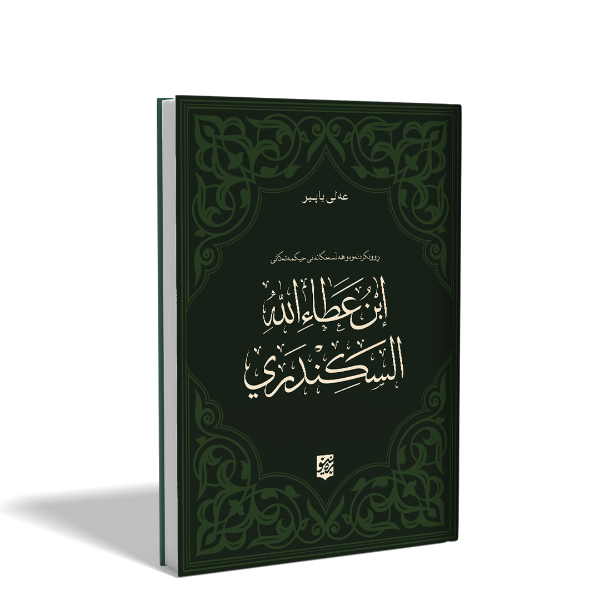
ڕوونکردنەوە و هەڵسەنگاندنێکی پشوودرێژانەیە بۆ حیکمەتەکانی ئەحمەد کوڕی عەتائوڵڵای سەکنندەری. لە بنەڕەتدا سی و سێ (٣٣) دەرس بوون و لە خوولێکدا پێشکەش کراون. شایەنی باسیشە ئەو حیکمەتانە لەمێژە زانایانی بواری تەزکیە و تەسەووف بە ڕوونکردنەوە و لێکدانەوەیانەوە سەرقاڵن و شەرحی زۆریان کراون، کەم و زۆریش سوودم لە بەشێک لەو کتێب و بەرهەمانە وەرگرتووە. ڕەنگە ئیمتیاز و جیاوازیی سەرەکیی ئەم بەرهەمە ئەوە بێت بەپێچەوانەی سەرجەم شەرحەکانی دیکەوە، وێڕای ڕوونکردنەوە و لێکدانەوە، هەڵسەنگاندنم بۆ ژمارەیەکی زۆر لە حیکمەتەکان کردووە.
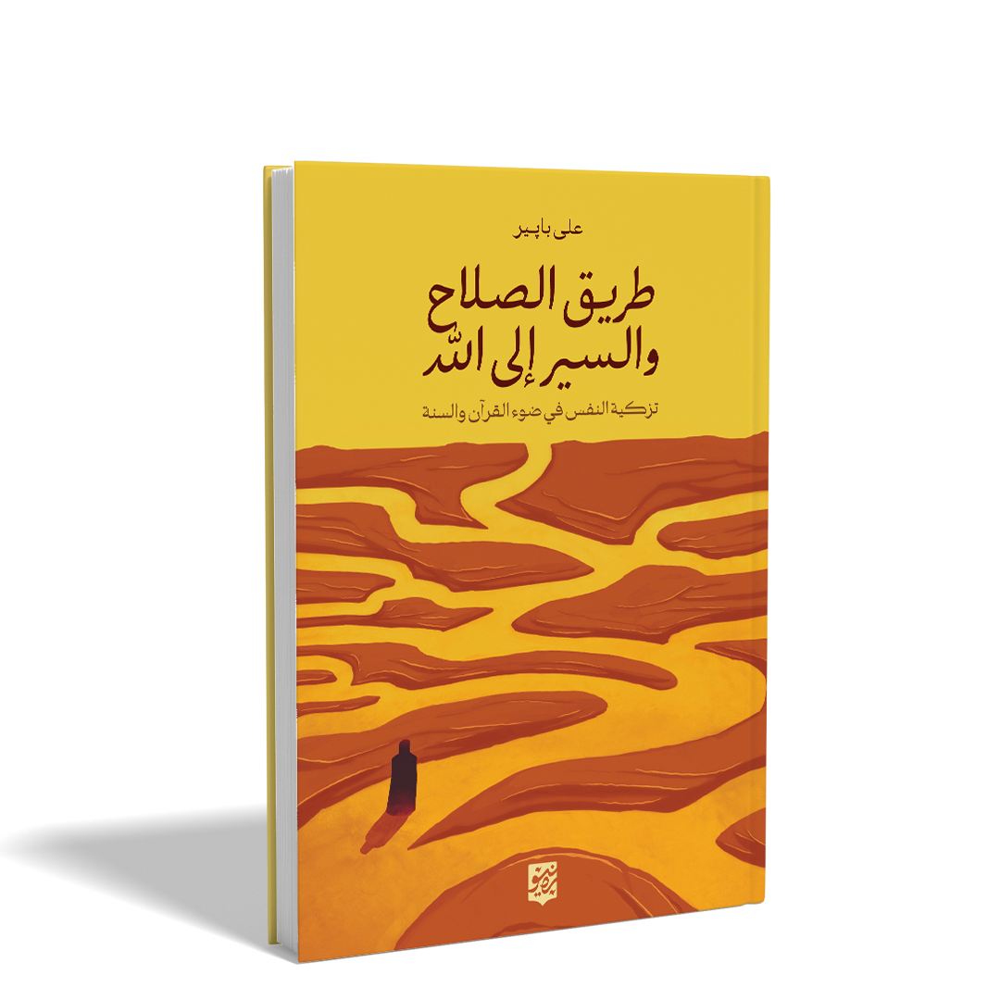
إن َّ تزكية النفس والتي اخترت لها في هذا الكتاب عنوان: «طريق الصلاح والسير إلى الله» ، بَحْر لا ساحل له، وذلك لارتباطها من جانب بالروح التي هي سر من أسرار الله تعالى، وبعد دخولها في الجسد تسمى النفس، ويقع عليها المدح والقدح بحسب ما تحملة من الفضائل والرذائل. وكذلك لها ارتباط - من جانب آخر - بالله ال الذي ليس كمثله شيء. وحاولت في هذا الكتاب - الذي هو عصارة ما وصلت إليه من فهوم وخبرات في هذا المجال - تسليط أضواء كثيرة ومتعددة على تزكية النفس، في عشرة فصول بمختلف نواحيها، وآمل أن يستوعب الفراء الكرام مضمون ما كتبته في هذا الموضوع الحساس العميق المترامي الأطراف، وأن يُتَّحِفوني بملاحظاتهم المخلصة، إذْ لَمْ تُصْمَن لنا العِصْمَةُ في غير كتاب الله وسنة رسول الله.
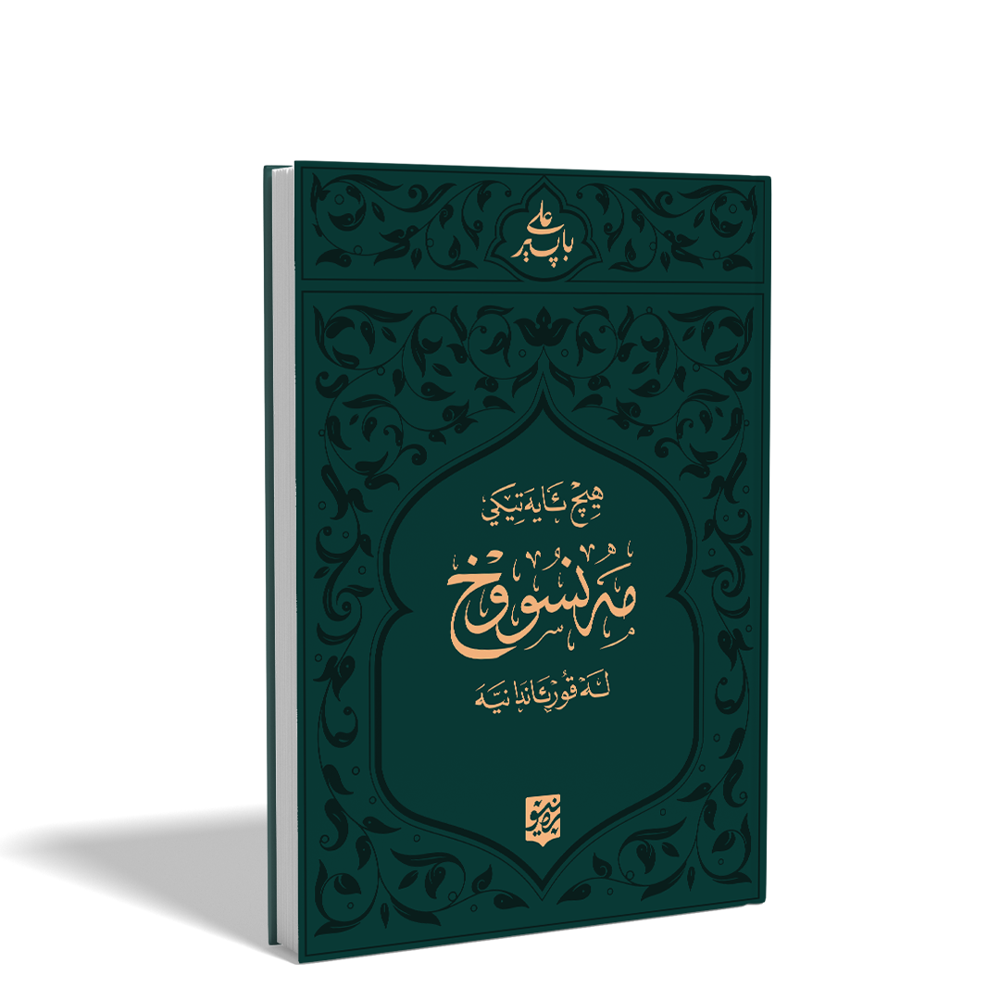
ئەم کتێبە لێکۆڵینەوەیەکی پشوودرێژانەیە لە بابەتێکی هەستیار کە جێی ڕاجیاییە لە نێوان لێکۆڵەرانی قورئان؛ بابەتی نەسخ، واتە هەڵوەشاندنەوەی ئایەتێکی قورئان یاخود حوکمێکی قورئان بەهۆی ئایەتێکی دیکەوە. نووسەر لەم کتێبەدا لەڕێی چەند لێکۆڵینەوە و بەڵگەیەکی زانستیی قورئانەوە ئەوە دەسەلمێنێت کە هیچ ئایەتێکی قورئان نەسخ نەکراوە و نەسخ لە قورئاندا بوونی نییە.
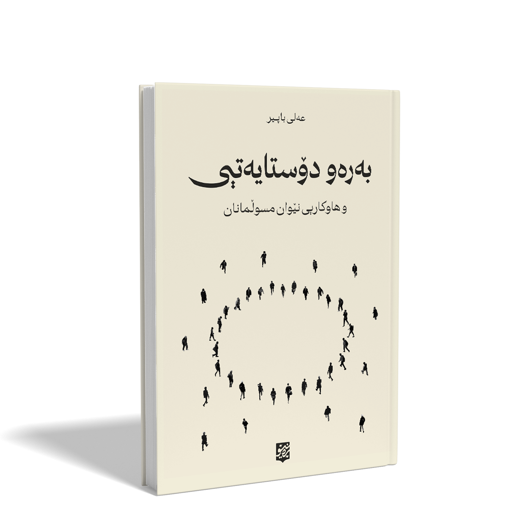
ئەم کتێبە باسی پێویستی و گرنگیی دۆستایەتی و ئاشتی و هاوکاریی نێوان تاکەکانی کۆمەڵگە دەکات، بەتایبەت ئەو کەسانەی کە ناسنامەی باوەڕیان هاوبەشە (مسوڵمانن)، لەبەر ئەوەی بەر لە هەموو شتێک بیروباوەڕیان ئەوە لەسەریان پێویست دەکات. ئەم کتێبە باسی چەند دەرد و نەخۆشییەکیش دەکات کە بوونەتە هۆی پەرتەوازەیی و لێکدوورکەوتنەوەی مسوڵمانان لە نێوان خۆیاندا و لە ئەنجامدا بێهێزبوونیان باس دەکات.
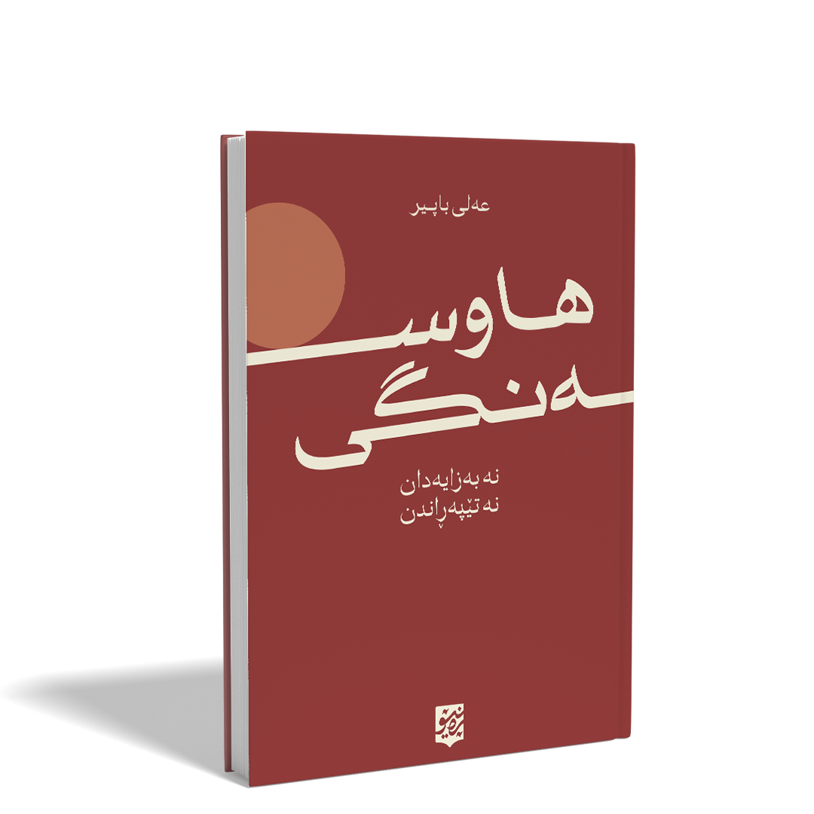
ئەم کتێبە باسی یەکێک لە دروشمە هەرە بنەڕەتییەکانی ئیسلام دەکات کە هاوسەنگییە. بە بڕوای نووسەر، بەزۆری مرۆڤایەتی یان تووشی بەزایەدان و کەمتەرخەمی و کورتھێنان دەبن، یان تووشی سنووربەزاندن و زێدەڕۆیی و تێنووسانی زۆر دەبن. لەم سۆنگەیەوە، پێویستیی ئەم کتێبە لە هەر کاتێکی دیکەدا زیاترە.
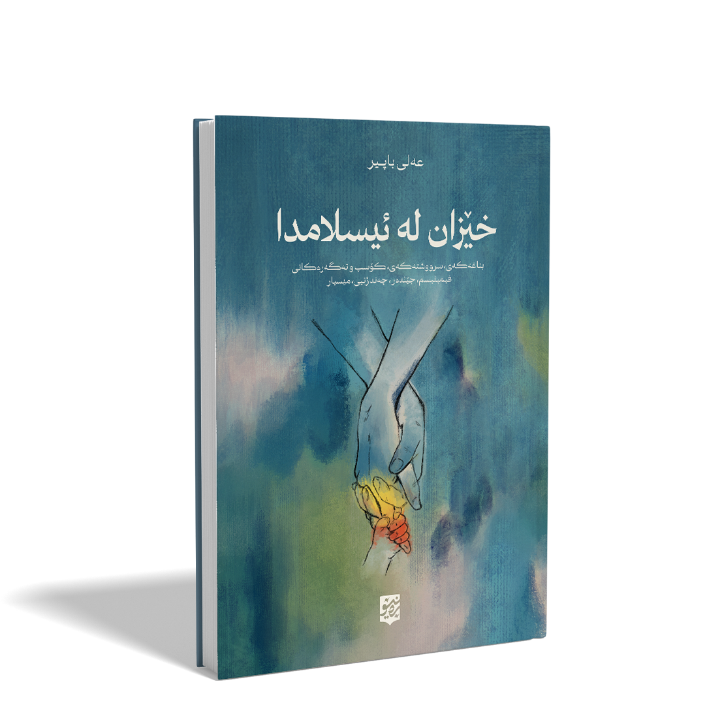
ئەم کتێبە باسی چەمکی فراوانی خێزان دەکات لە ئیسلامدا، کە باری سروشتی و بناغە و بونیادی کۆمەڵگەیە. پاشان باس لە کۆسپ و ڕێگرە هەڵوەشێنەرەوەکانی دەکات لە ڕۆژگاری ئێستادا، لە نێوانیاندا بابەتەکانی فێمینیزم و جێندەر، لە پشت ئەوانیشەوە هاوڕەگەزبازی و کاریگەرییان لەسەر خێزان دەخاتە ڕوو. لەم بەرهەمەدا کۆمەڵێک باسی دیکەی هەستیار توێژراونەتەوە، وەک بارە تایبەتەکانی خێزان لە ئیسلامدا؛ چەندژنی (فرەژنی) و هاوسەرگیریی میسیار.